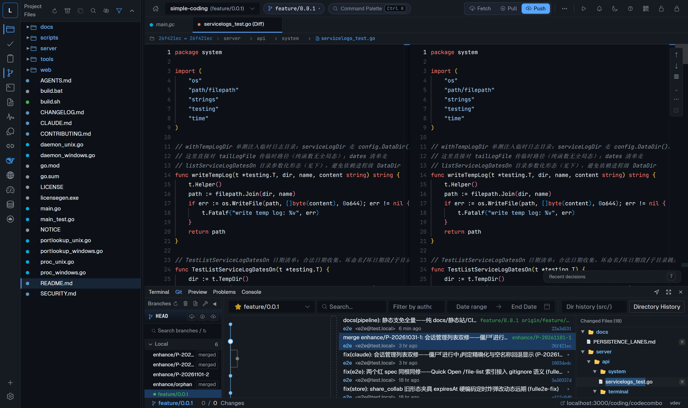
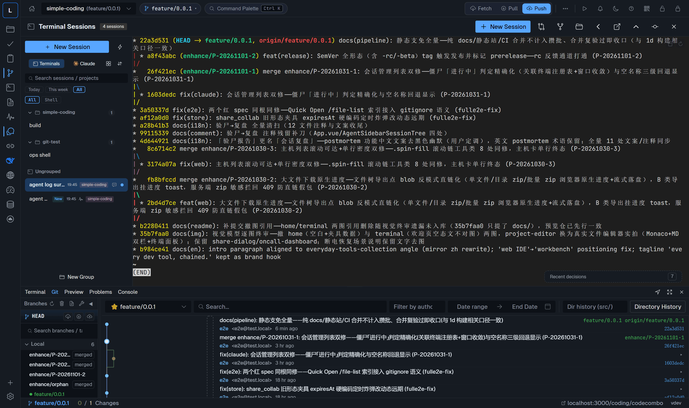
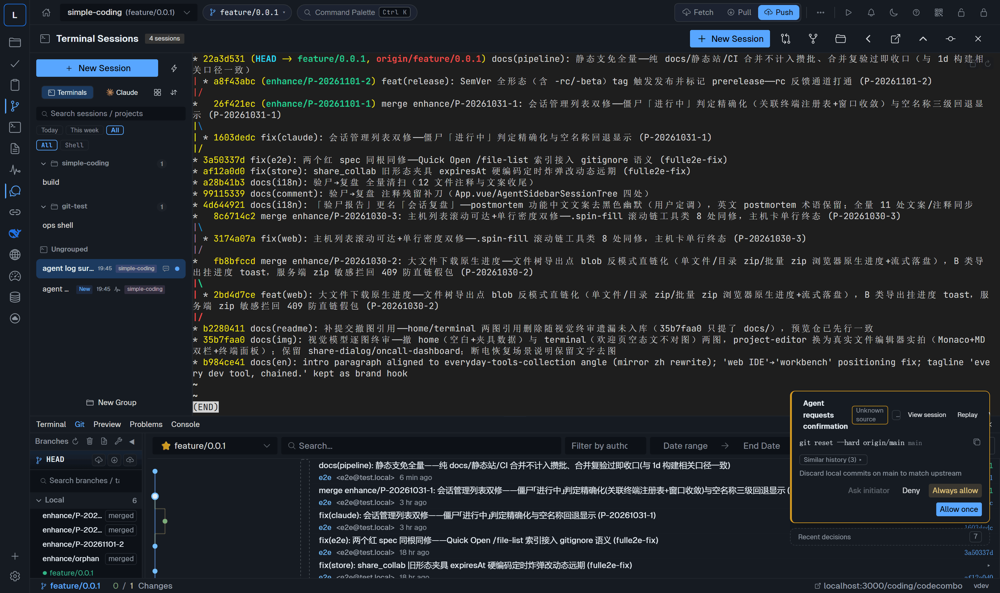
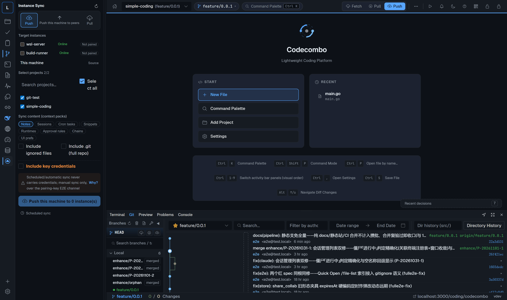
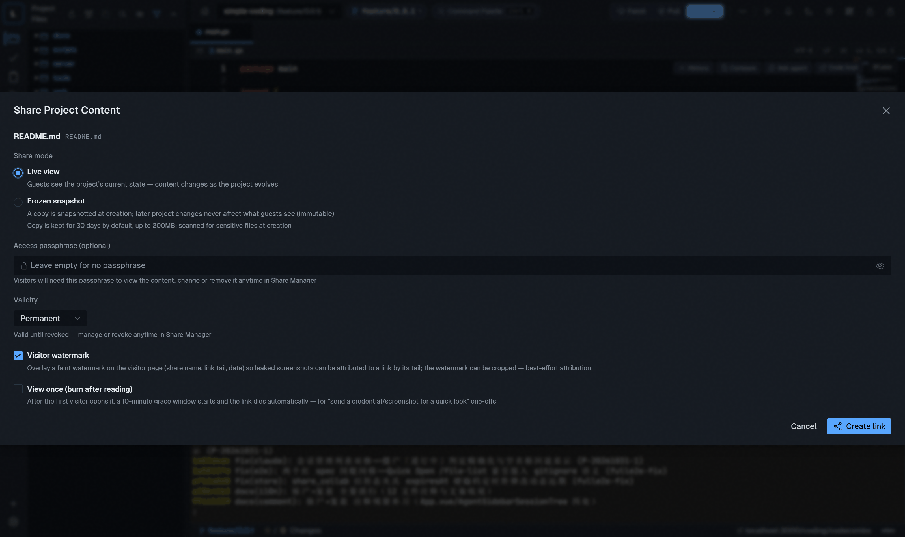
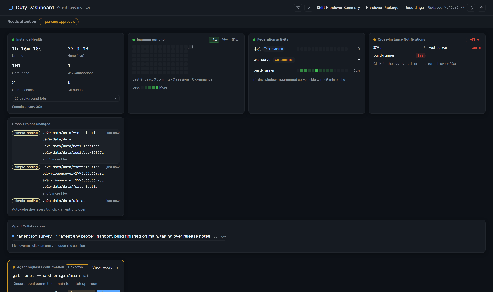

Complete Git workbench完整的 Git 工作台
Staging down to the hunk, three-way diffs, interactive rebase with
drag-and-drop, merge preview, worktrees — and a commit graph you can cherry-pick from.
按块级暂存、三栏 diff、拖拽交互式 rebase、合并预览、worktree——
还有可以随手 cherry-pick 的提交图谱。

AI agent sessionsAI 智能体会话
Multiple agent sessions per project, continuation chains, scheduled jobs,
runbooks and fleet execution — every session a real PTY with replayable scrollback.
单项目多智能体会话、接力链、定时任务、运行书与机群执行——
每个会话都是真实 PTY，输出全程可回放。

Approvals, not blank checks审批卡，不是空白支票
High-risk commands and mass replacements return as approval cards with
live terminal recording — approve, deny or edit per item. Secrets are redacted on the way out.
高危命令与批量替换以审批卡回流，附实时终端录像——逐条允许、拒绝或改写。
敏感值出站前自动脱敏。

One instance runs the fleet一台管机群
Manage many Codecombo instances through a central proxy: switching with
health overview, terminal take-over, instance-to-instance sync and one-shot machine migration.
经中心代理管理多个实例：健康总览里切换、远程终端接管、实例间同步
与一键整机迁移。

Share anything, one click一键分享任何内容
A file, a folder, a snippet or a live terminal via one link — TTL,
password, view-once and frozen snapshots one toggle away. Visitors need no account.
文件、目录、文本片段或实时终端，一条短链搞定——TTL、口令、
阅后即焚与冻结快照随手可开。访客无需账号。

On-call dashboard值班大屏
One screen for what your box is doing right now: instance health,
activity heatmap, live change stream, agent collaboration and approvals waiting on you.
一块屏看清机器此刻在做什么：实例健康、活跃热图、实时变更流、
智能体协作流与等你裁决的审批。